Fotostil
De billeder, som vi har valgt at bruge på siden, er billeder af maskiner fra værkstedet samt produktbilleder, som allerede er blevet lavet og leveret til kunder. Da vi ikke har haft mulighed for at tage billeder af produkterne, har vi redigeret billederne, så de fremstår flotte og indbydende. Grundet kvaliteten af disse billeder, har det selvfølgelig været begrænset hvor meget der kunne gøres, men vi har så vidt muligt prøvet at redigere billederne, så de fremstår ensformige. Vi vil gerne have de varme, jordnære farver går igen, da de skaber en velkommende stemning, samtidig med at de udstråler, at det er lavet af træ og fra hånden. Desuden har vi skruet op for konstrasten, for yderligere at sætte det centrale objekt på hvert enkelt billede i fokus.
 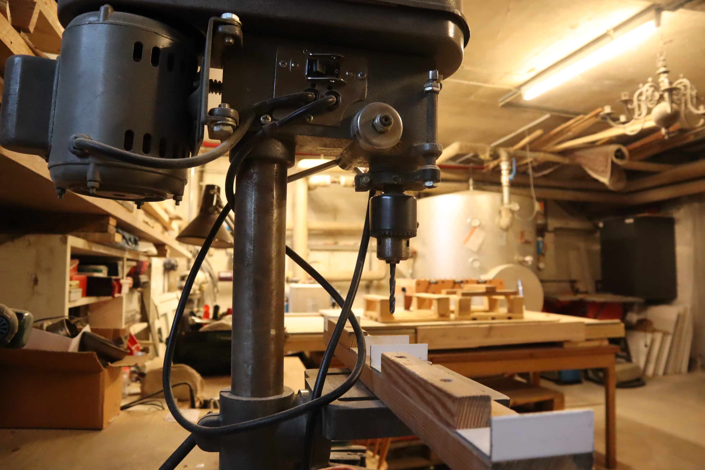
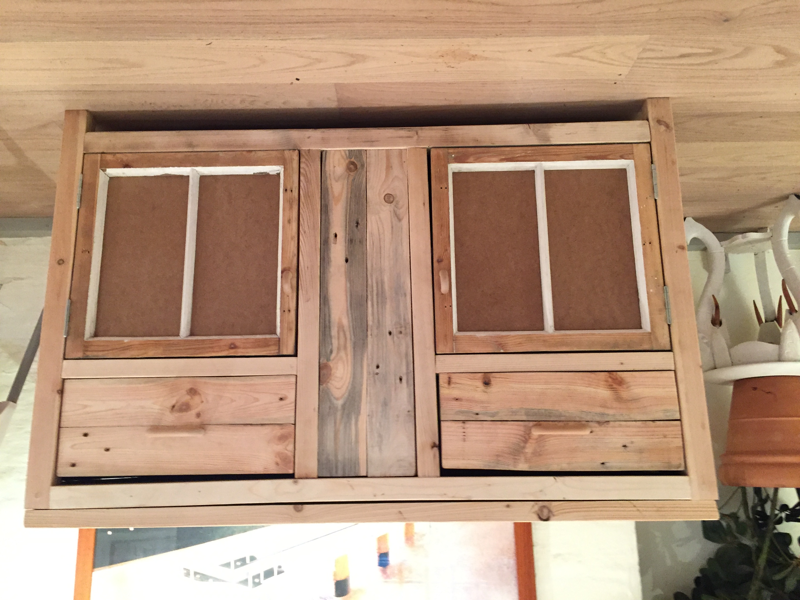
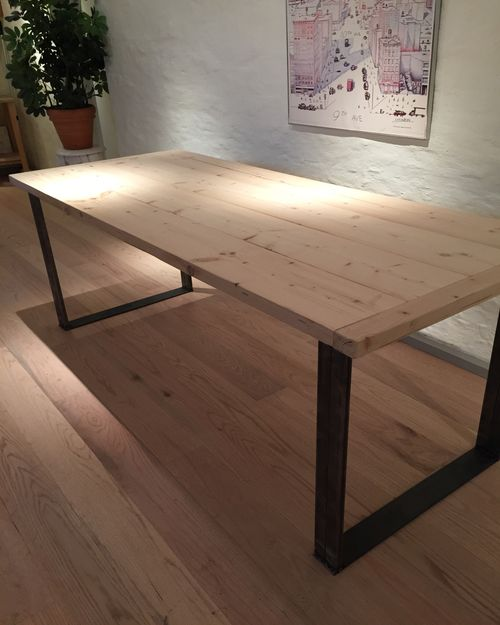
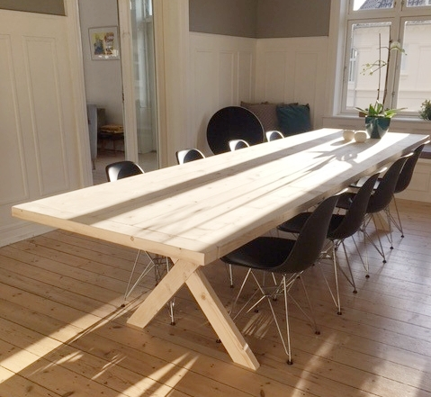
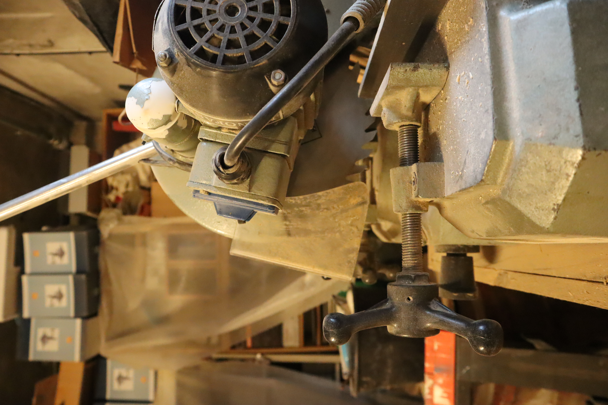
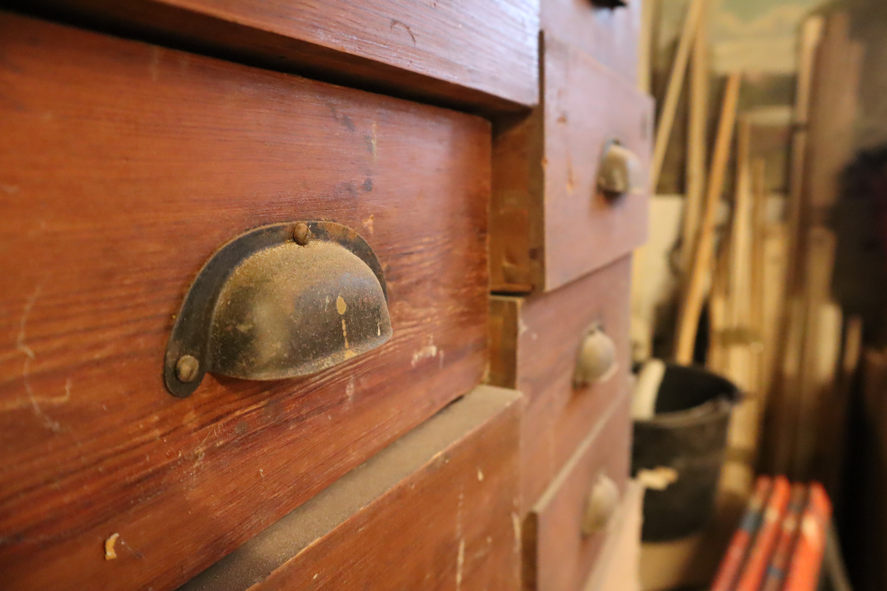
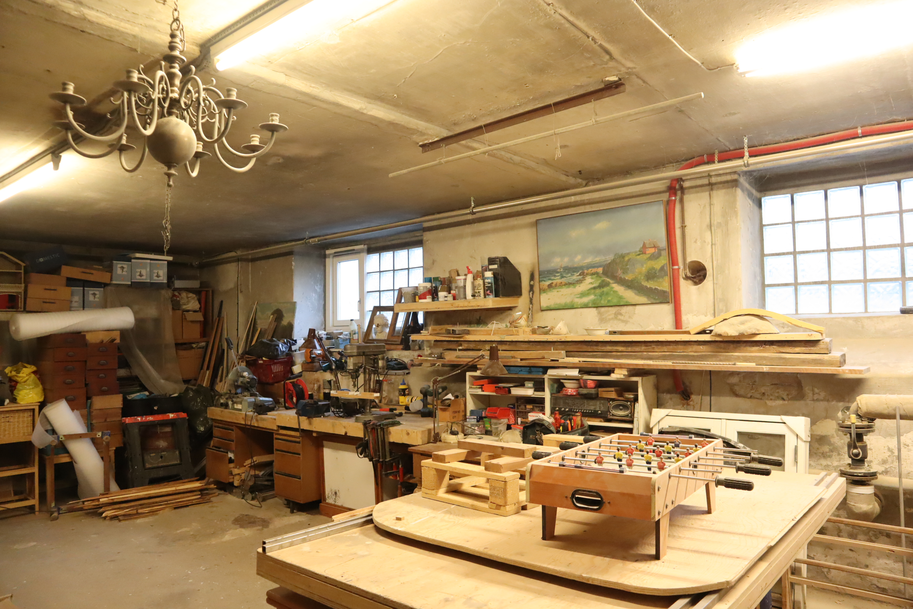
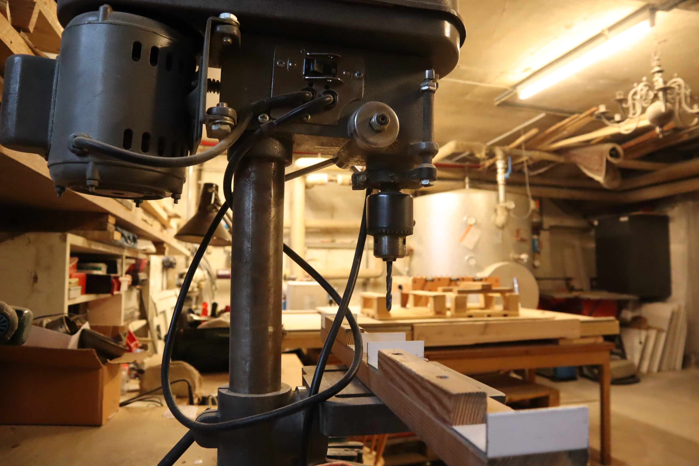
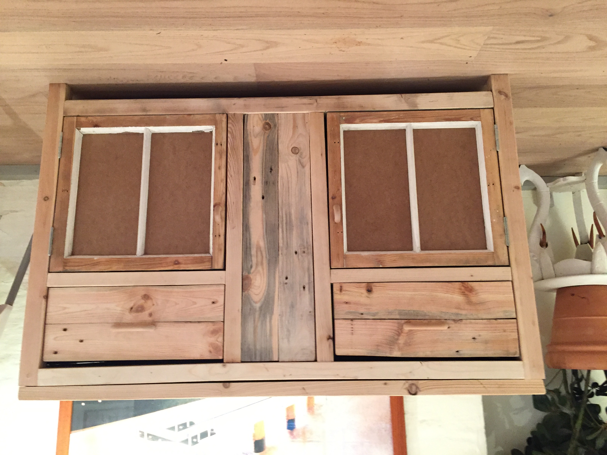
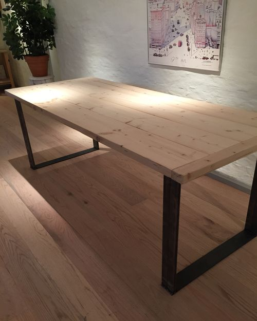
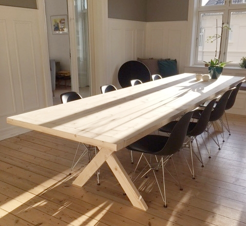
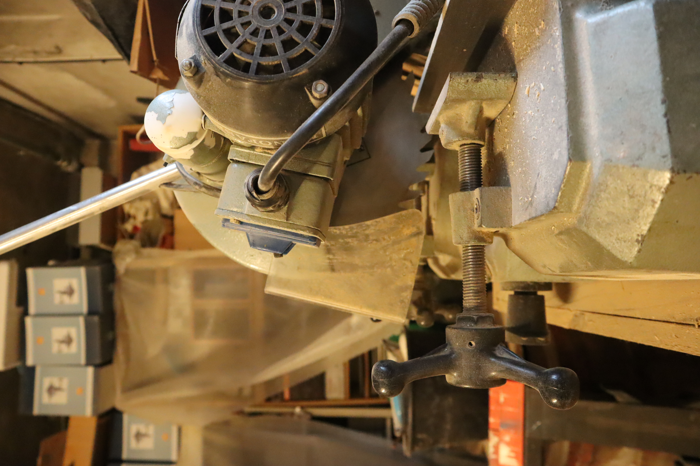
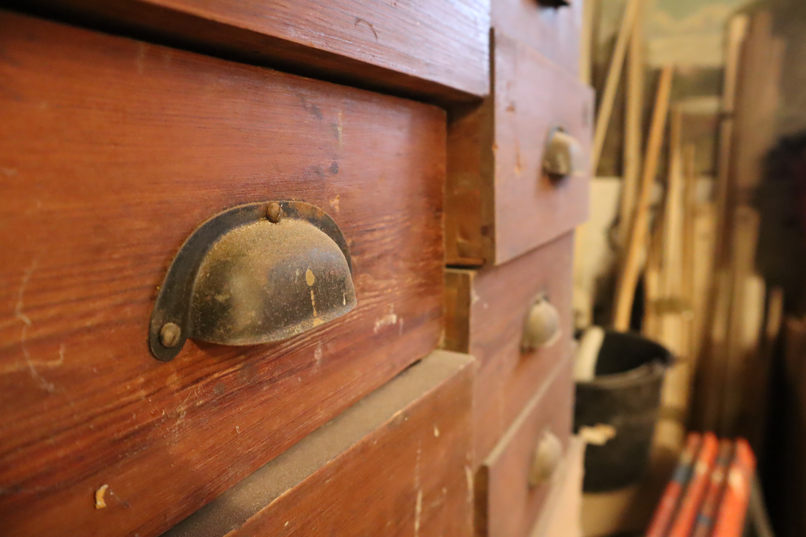
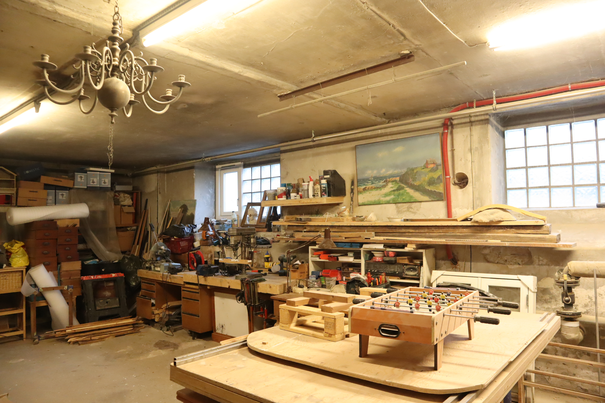

 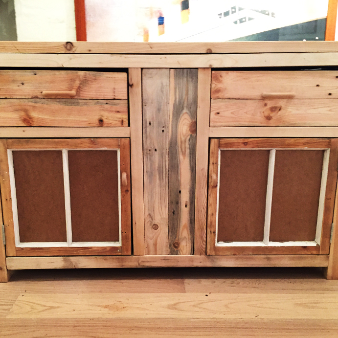
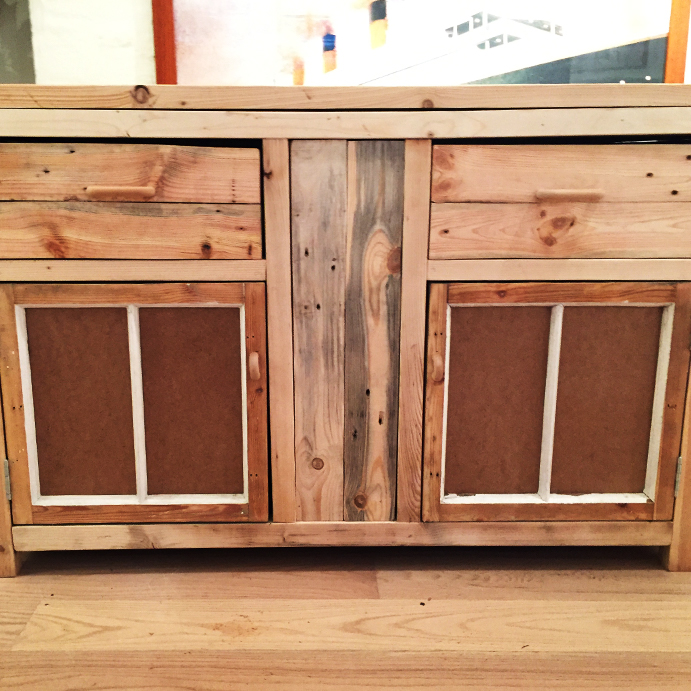